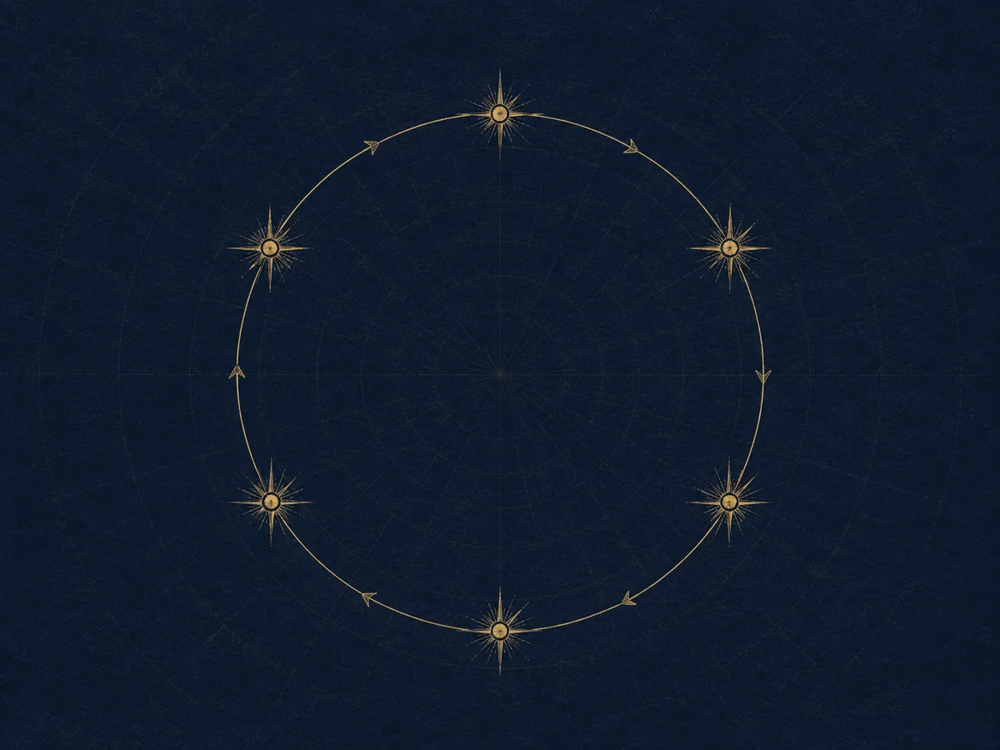

01
CTI Temelleri
İstihbaratın ne olduğu, neyin gösterge neyin davranış sayıldığı, bir raporun neden derecelendirildiği.
- İstihbarat döngüsü nedir
- Gösterge mi, davranış mı
- TLP ve PAP ne işe yarar
- Bir raporu nasıl derecelendiririz
